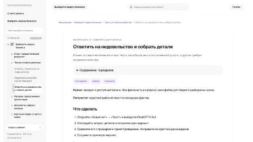
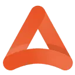

EchoWinAI-персонажи
В инструменте «EchoWin» можно связывать действия в автоматизированный процесс. Ещё одно направление работы: готовить ответы на обращения клиентов.
Клиентская поддержка: Проверьте ответы по собственной базе знаний. Настройте передачу сложных обращений человеку и доступ бота к данным.
Начните с описания обращения и утверждённого порядка действий. В Молекуле можно подготовить спокойный ответ, который собирает нужные детали и передаёт вопрос уполномоченному сотруднику.
Клиент сообщает, что комплект неполный, но не указал номер заказа. Подготовь ответ с просьбой прислать данные и фотографию упаковки. Компенсацию пока не обещай.

В инструменте «EchoWin» можно связывать действия в автоматизированный процесс. Ещё одно направление работы: готовить ответы на обращения клиентов.
Interprefy рассчитан на задачи, где нужно готовить ответы на обращения клиентов. Ещё одно направление работы: переносить содержание материала на другой язык.

Ocoya относится к инструментам, которые помогают готовить ответы на обращения клиентов. Ещё одно направление работы: готовить текст по теме и требованиям к содержанию.
Pilot используют для задачи: обрабатывать финансовые документы и записи. Ещё одно направление работы: готовить ответы на обращения клиентов.
DoNotPay используют для задачи: исследовать тему и разбирать найденную информацию. Ещё одно направление работы: готовить ответы на обращения клиентов.
Dust.tt относится к инструментам, которые помогают связывать действия в автоматизированный процесс. Ещё одно направление работы: готовить ответы на обращения клиентов.

CustomGPT.ai используют, чтобы готовить ответы на обращения клиентов. Ещё одно направление работы: собирать видео с цифровым ведущим.

Inbox Zero помогает организовать электронную почту с использованием ИИ. Среди функций указаны массовая отписка от рассылок, расстановка приоритетов, автоматические ответы и аналитика переписки. Инструмент предназначен для управления потоком входящих сообщений, когда важные обращения нужно отделять от подписок и других менее приоритетных писем.
Paradox относится к инструментам, которые помогают готовить ответы на обращения клиентов. Ещё одно направление работы: обрабатывать голосовые обращения.
Shortwave рассчитан на задачи, где нужно подготавливать письма и сценарии переписки. Ещё одно направление работы: готовить ответы на обращения клиентов.
Stammer AI рассчитан на задачи, где нужно связывать действия в автоматизированный процесс. Ещё одно направление работы: готовить ответы на обращения клиентов.

Arahi AI относится к инструментам, которые помогают писать и изменять программный код. Ещё одно направление работы: готовить ответы на обращения клиентов.

ChatGPT помогает писать и редактировать тексты, разбирать документы и таблицы, обсуждать код. Поиск, анализ данных и работа с изображениями дополняют чат, когда доступны в выбранном аккаунте.
В инструменте «Dograh» можно готовить ответы на обращения клиентов. Ещё одно направление работы: обрабатывать голосовые обращения.
SiteGPT используют для задачи: готовить ответы на обращения клиентов. Ещё одно направление работы: собирать видео с цифровым ведущим.
Streamline AI используют, чтобы готовить ответы на обращения клиентов. Ещё одно направление работы: разбирать текст договора и связанные документы.
Supercreator рассчитан на задачи, где нужно готовить ответы на обращения клиентов. Ещё одно направление работы: собирать видео с цифровым ведущим.
TalkbackAI используют для задачи: готовить ответы на обращения клиентов. Ещё одно направление работы: готовить материалы о товарах и услугах.
Botpress помогает настроить разговорного агента для поддержки. Ответы зависят от базы знаний, а сценарий действий определяет, что бот делает помимо сообщения в чате.
IBM watsonx Orchestrate относится к инструментам, которые помогают связывать действия в автоматизированный процесс. Ещё одно направление работы: готовить ответы на обращения клиентов.
INNit AI относится к инструментам, которые помогают готовить ответы на обращения клиентов. Ещё одно направление работы: обрабатывать голосовые обращения.
LILT рассчитан на задачи, где нужно сокращать материал до основных положений. Ещё одно направление работы: готовить ответы на обращения клиентов.
RentAHuman.ai относится к инструментам, которые помогают связывать действия в автоматизированный процесс. Ещё одно направление работы: готовить ответы на обращения клиентов.
Siena AI относится к инструментам, которые помогают связывать действия в автоматизированный процесс. Ещё одно направление работы: готовить ответы на обращения клиентов.

Tidio соединяет чат с инструментами поддержки. Польза автоматических ответов зависит от актуальности правил и возможности обратиться к человеку.
Workday используют для задачи: разбирать финансовые показатели и рыночные данные. Ещё одно направление работы: готовить ответы на обращения клиентов.
AppZen рассчитан на задачи, где нужно связывать действия в автоматизированный процесс. Ещё одно направление работы: готовить ответы на обращения клиентов.
В инструменте «Greip.io» можно выполнять задачи с веб-страницами. Ещё одно направление работы: исследовать тему и разбирать найденную информацию.
Gumloop относится к инструментам, которые помогают писать и изменять программный код. Ещё одно направление работы: готовить ответы на обращения клиентов.
HARPA AI относится к инструментам, которые помогают связывать действия в автоматизированный процесс. Ещё одно направление работы: собирать видеосцену по описанию или визуальному исходнику.
Orimon.ai используют, чтобы готовить ответы на обращения клиентов. Ещё одно направление работы: обрабатывать голосовые обращения.
В инструменте «Spot AI» можно собирать видеосцену по описанию или визуальному исходнику. Ещё одно направление работы: выполнять задачи с веб-страницами.
Thoughtly рассчитан на задачи, где нужно готовить ответы на обращения клиентов. Ещё одно направление работы: обрабатывать голосовые обращения.
tinyAlbert рассчитан на задачи, где нужно подготавливать письма и сценарии переписки. Ещё одно направление работы: готовить ответы на обращения клиентов.
В инструменте «Vessium» можно готовить ответы на обращения клиентов. Ещё одно направление работы: собирать рабочие инструменты и операции с данными.
Wonderchat используют, чтобы создавать основу сайта или приложения. Ещё одно направление работы: готовить ответы на обращения клиентов.
AskVet используют, чтобы готовить ответы на обращения клиентов. Ещё одно направление работы: готовить текст по теме и требованиям к содержанию.
DeepSeek используют для разговорных задач, объяснения кода и подготовки программных решений. API позволяет встроить модель в приложение, управляя входными сообщениями и обработкой ответа.
Fireworks AI используют, чтобы исследовать тему и разбирать найденную информацию. Ещё одно направление работы: готовить ответы на обращения клиентов.
Lumo используют для задачи: готовить ответы на обращения клиентов. Ещё одно направление работы: собирать видео с цифровым ведущим.
Lutra AI используют, чтобы писать и изменять программный код. Ещё одно направление работы: готовить ответы на обращения клиентов.
Страница 2 из 2